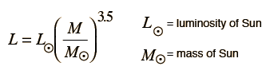
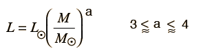
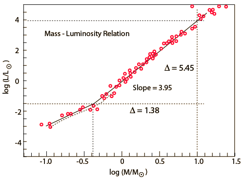

Mass-Luminosity Relationship
For main sequence stars, the luminosity increases with the mass with the approximate power law:

A more conservative approach used by a number of astronomy texts is to use a relationship with the power left as a range of values.

The determination of a power relationship can be done by doing a log-log plot of the luminosities and masses. The slope of such a plot gives the power. Below is such a plot of data included in Harwit and attributed to the Royal Astronomical Society.

The power of 3.95 obtained from the upper part of this data shows the approach, but the range of masses is rather small. The value of 3.5 is most commonly used, and will be used in an estimate of stellar lifetimes.
|